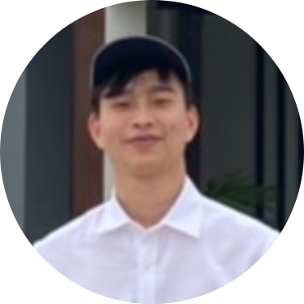

|  |
Pond (Tachpol) PosaphiwatUndergraduate Student in Mechanical Engineering I love learning new things.
|
| Programming | |
| Languages | Java, Python |
| Engineering | |
| Design | Solidworks (highest proficiency), AutoCAD, Fusion360 |
| Simulation | Solidworks FEA, Ansys, Matlab and Simulink |
| Fabrication | 3D Printing, Laser Cutting, Knowledge of GD&T |
| Others | Microcontroller Programming |
| Languages | |
| Thai | Native |
| Mandarin | Speaking fluency with intermediate reading and writing |
| Date | Work |
|---|---|
| 2020 Summer | Lab Intern at Smart Lab, King Mongkut's University of Technology Thonburi |
| 2021 Fall | Part-time Mechanical Engineering Intern at Fibulas |